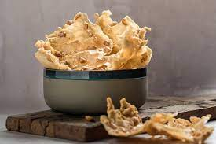

Pejeh Recept

Pejeh
Javaanse Pejeh is een Javaanse gebakken krokante snack of Surinaamse chips met pinda en/of gedroogde garnalen. De Surinaamse-Javanen noemen deze heerlijke snack ook wel Rempejek.
Ingredienten
- 150 gram bloem
- 150 gram rijstmeel
- 2 eetlepels maïzena
- 1 ei
- 1 teentje knoflook
- zout naar smaak
- 50ml kokosmelk
- 100 gram pinda's
- 100 gram kleine gedroogde garnalen
- olie
- water
Instructions
- Meng de fijngemalen knoflook, bloem, rijstmeel, maizena en zout.
- Voeg een losgeklopt ei erbij
- Voeg kokosmelk en voldoende water toe en mengen totdat een slap (pannenkoek) deeg ontstaat.
- Breek de pinda in groffe stukken met een vijzel of blender. De pindas en eventueel de garnaaltjes bij doen.
- Bakken in een grote wok of wadjan pan in hete olie, want bij het bakken moet je het beslag niet direct in de hete olie gieten, maar langzaam aan de langszij van de wadjan/wok boven de oliehoogte verspreiden en dan bakken. Zo bak je de Javaanse Peje verder gaar in de olie.
Back to recipes